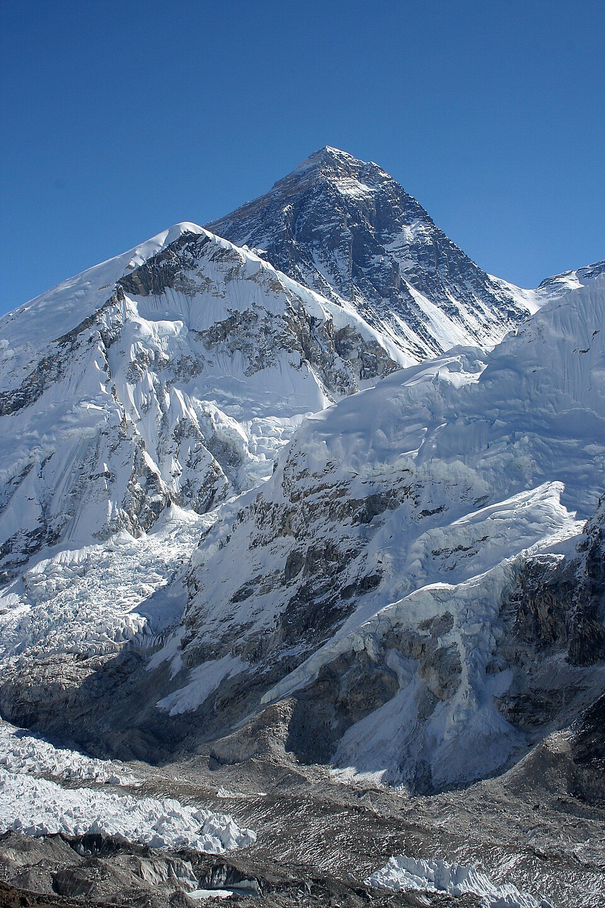

Hillary y Tenzing pisan la cumbre del Everest: nadie había estado nunca tan alto sobre la Tierra
El apicultor neozelandés Edmund Hillary y el sherpa Tenzing Norgay alcanzaron los 8.848 metros de la montaña más alta del planeta y permanecieron quince minutos en la cima. La noticia corre hacia Londres justo a tiempo para la coronación de la reina.

A las once y media de la mañana del 29 de mayo, después de horas de trepar sobre la nieve con las botellas de oxígeno a la espalda, dos hombres se quedaron sin montaña por encima de sus cabezas: habían llegado a la cumbre del Everest, ocho mil ochocientos cuarenta y ocho metros, el punto más alto de la corteza del planeta. El neozelandés Edmund Hillary, apicultor de oficio, y el sherpa Tenzing Norgay, montañés del Himalaya, permanecieron arriba unos quince minutos: se estrecharon la mano, después se abrazaron como niños, tomaron fotografías en las cuatro direcciones, y Tenzing enterró en la nieve unos dulces como ofrenda a la montaña que su pueblo tiene por sagrada.
La cima costó más de tres décadas de intentos y no pocas vidas. Desde que en los años veinte los ingleses empezaron a asediarla por el lado del Tíbet, una hilera de expediciones se estrelló contra el frío, la falta de aire y las tormentas; de una de ellas, en 1924, no volvieron dos escaladores, y aún se discute si Mallory e Irvine alcanzaron la cumbre antes de morir. La expedición británica de este año, numerosa y metódica, trabajó como un asedio militar: cadenas de porteadores, campamentos escalonados, tanques de oxígeno, y una primera pareja que debió retroceder a pocos metros de la meta, agotada, dejando la última oportunidad a Hillary y Tenzing.
El techo del mundo se defiende con un arma invisible: a esa altura el aire tiene apenas un tercio del oxígeno que respira un hombre al nivel del mar, y el cuerpo empieza a morirse mientras sube. Por eso los dos escaladores cargaron aparatos de oxígeno embotellado, discutidos entonces como una ayuda casi tramposa, sin los cuales —hoy se admite— la hazaña habría sido imposible. El último obstáculo fue un paredón de roca y hielo de unos doce metros, cerca de la cima, que desde hoy llevará el nombre del neozelandés. La expedición, financiada desde Londres, sabía que una buena noticia haría pronto falta: en pocos días se corona en la abadía a la joven Isabel II.
De regreso al campamento, Hillary saludó a su amigo George Lowe, que salía a recibirlo, con una frase que ni la modestia británica pudo domesticar: cuentan que dijo, más o menos, «hemos tumbado al condenado», con una palabra bastante más cruda que ésa. Sobre quién pisó primero la cumbre, los dos hombres pactaron un silencio elegante: durante años responderían que llegaron «prácticamente juntos», para que nadie hiciera del compañero un segundo. Tenzing, que ya había intentado la montaña seis veces, se convertiría de golpe en héroe de dos países que se lo disputan; Hillary, en caballero del reino. Los dulces enterrados en la nieve, en cambio, siguen allá arriba.
No queda ya cumbre terrestre por pisar por primera vez: con el Everest cae el último de los grandes trofeos geográficos, después de los polos y de las fuentes de los ríos. Habrá quien pregunte para qué sirve subir a un lugar donde nada crece y nada espera; la respuesta seguirá siendo, seguramente, la que dio un escalador de otra época, que quería subir «porque está ahí». Lo que este diario anota es más simple: que en una época acostumbrada a las malas noticias, dos hombres de naciones y credos distintos se ayudaron a llegar, atados a la misma cuerda, adonde nadie había llegado. Desde mañana, el hombre deberá buscar sus cumbres más arriba, o más adentro.